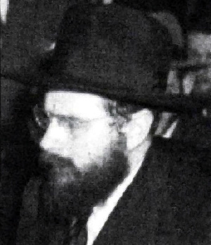

The First American Tamim
About one of the first shluchim in the United States, R’ Shlomo Zalman Hecht a”h. * Presented to mark his passing on 24 Menachem Av 5739.
AN AMERICAN IN TOMCHEI T’MIMIM IN POLAND

On 3 Nissan 5698/1938, he became engaged to the daughter of R’ Yisroel Jacobson. R’ Yisroel, who urged the bachurim to review Chassidus every Shabbos had, just the week before, described his future son-in-law’s reviewing of Chassidus in a letter that he wrote to R’ Mordechai Chafetz, a shadar (fundraiser):
“Last Shabbos, Shlomo [Hecht] reviewed the maamer “Naaseh na” and amazed the entire audience. He reviewed the maamer like an experienced veteran. My joy was beyond all bounds. This made a very great impression on all the talmidim and brought them closer and strengthened them in the study of Chassidus.”
Right after the Tanaim, the chassan stopped shaving his beard, which made a great impression on all the bachurim in yeshiva. Can you believe it? An unshaven American bachur!
The wedding took place four months later on 3 Elul. As had been arranged, right after the sheva brachos the young couple boarded a ship headed for Poland. The young chassan was going to learn in Tomchei T’mimim. Before the sheva brachos, R’ Yisroel had written to R’ Chatshe Feigin and asked him to look out for his son-in-law. R’ Chatshe responded in a letter dated 6 Elul:
“Regarding what you wrote, that you plan for them to come here, G-d willing, there will be no lack on my part in doing whatever is possible in every manner of kiruv, and I will try to get the hanhala of the yeshiva to give him special attention.”
R’ Chatshe tried to do as he promised, but the couple arrived so close to Yom Tov that they did not manage to arrange an apartment for them and they rented a room in a small hotel. However, the Rebbe said they needed to have an apartment and it would be good for them materially and spiritually.
Two weeks later, R’ Chatshe was able to report to R’ Yisroel that his daughter and son-in-law had rented an apartment in the courtyard where the Rebbetzin, Mr. Dubin, and he himself lived, which would be helpful to his daughter when her husband was in the yeshiva.
A few weeks after R’ Hecht went, another two bachurim traveled from the US to Poland, and a few months later, R’ Yisroel himself went with another six bachurim.
Upon arriving, the bachurim discovered that there was an enormous difference between the chinuch, guidance, and the spirit of Yeshivas Tomchei T’mimim in Poland and the lifestyle and chinuch to which they had become accustomed in the United States. You can imagine their state of mind at this time. Aside from this, R’ Shlomo Zalman’s inborn pessimism made him feel that he wasn’t progressing in his learning of Nigleh and Chassidus, despite the fact that he sat and learned all day. The rosh yeshiva, R’ Yehuda Eber, wrote to his father-in-law, “I see your son-in-law all day in yeshiva and I am very satisfied with him.” R’ Hecht’s chavrusa was the son of the famous Chassidic askan, R’ Mordechai Dubin.
R’ Shlomo Zalman had yechidus with the Rebbe Rayatz who reacted to his dismay with a short line, “In Lubavitch they didn’t touch the nape of the neck.” He was referring to the Chassidic parable about the person whose doctor told him he had to put on weight and had to eat certain foods. The man hurried to the marketplace and bought the food, cooked and prepared it, and sat down to eat. As he ate, he began feeling his neck to see whether he had put on any weight.
The Rebbe made the same point to R’ Yisroel when he had yechidus: One need not keep looking to see whether he has changed. The very fact that one is living with the darkei ha’chassidus and learning Chassidus will have the desired effect.
Indeed, when R’ Shlomo Zalman returned, they could see he was a changed man.
DOUBLE RESCUE
In 1939, the American embassy told the Hecht brothers to leave Otvotzk since war was about to erupt in Europe. With the Rebbe’s blessing, they boarded a ship along with the other bachurim who had come from America to the yeshiva. These bachurim were almost the only ones to be saved from the Nazi inferno. Nearly all the rest of the talmidim of the yeshiva were killed during the war.
When R’ Shlomo Zalman returned to America, he merited to play an important role in preparing the ground for the Rebbe’s arrival in America. During the war, the Rebbe Rayatz tried to get his library out of Europe and to the US. In order to do this, he legally registered the s’farim in the name of R’ Yisroel Jacobson and his son-in-law, R’ Shlomo Zalman Hecht. After the war, when he tried to locate the s’farim, the Rebbe wrote to Warsaw and noted that the manuscripts were registered in the names of the two members of Aguch.
Years later, this letter of the Rebbe was a deciding factor in the court case regarding the library, when the other side claimed the s’farim were a personal possession and did not belong to Aguch.
SHLICHUS IN CHICAGO
Chicago has a rich Chassidic history. Many Chassidim who emigrated from Russia, as well as many other Jews, settled in Chicago over 120 years ago. There were at least five Nusach Ari shuls with the biggest and most famous of them called B’nei Reuven. Even before that, there was a Lubavitcher shul that was founded in 5653/1893 in the time of the Rebbe Rashab. When the Rebbe Rayatz arrived in the US in 5689/1929, he visited Chicago which thrilled thousands of former Chassidim.
In 5702/1942, the only trip the Rebbe Rayatz made after he had arrived at 770 was to Chicago. In Chicago at that time, there lived nearly 300,000 Jews, which made it the second largest concentration of Jews in America after New York.
R’ Yaakov Himmelfarb sadly summed up the spiritual state of the city in a letter that he wrote to the publication Kovetz Lubavitch. He wrote of his memories of the shuls that were active in the 1920’s: “But unfortunately, we can forget all this; a churban came upon all of Judaism in Chicago.” The magnificent Judaism of Chicago almost disappeared. The next generation of religious Jews did not, for the most part, remain in Chicago. That was the situation in the years when the Rebbe Rayatz had just come to America.
Even before the Rebbe went on his second visit, the Anshei Lubavitch shul was no more. The people who prayed there were former Chassidim or the children of Chassidim, but since the religious level wasn’t high, and there was no Chassidic rabbi, the Misnagdim had taken over and the Anshei Lubavitch shul had a Litvishe atmosphere.
As soon as the Rebbe arrived in America, he tried to restore the Lubavitch glory to the shul by having R’ Moshe Leib Rodstein, who had been sent to Chicago, review Chassidus there every Shabbos. He also tried to promote R’ Shlomo Zalman Hecht for the position of rabbi, but the timing wasn’t right until 1943, when the shul celebrated fifty years since its founding. The Rebbe sent R’ Hecht to the celebration as his representative. This move worked and R’ Hecht won over the people of the shul. As soon as he returned to New York, he was elected as rav of this shul.
The next day, the Rebbe wrote to the Chassid, R’ Sholom Posner, who lived in Chicago, and asked him to be mekarev and honor the young Chassid, “because he is your brother and agreed to my order to move and to accept the rabbinic position in this shul, l’mazal tov, and this is mesirus nefesh on his part to leave his parents and his in-laws …”
In another letter of that same day, the Rebbe blessed the members of the community “upon appointing as rav my great friend, my precious and dear student, the rav outstanding in elevated character and good temperament, who loves the creations and draws them close with a pure heart and sweet words to endear the Torah and mitzvos and pleasant character traits to them, a diligent activist with many accomplishments in the field of education and in strengthening Judaism, R’ S. Zalman Hecht …”
Before he left, the new rabbi had yechidus with the Rebbe. The Rebbe outlined for him the path which Chabad shluchim follow till this day: “All your work there ought to be only with kiruv (drawing close).”
Toward the end of Shvat 5705, R’ Hecht had yechidus regarding his shlichus to Chicago. The Rebbe spoke to him about the shlichus but R’ Shlomo Zalman left in a turmoil about something else. During the yechidus, the Rebbe had said to him, “The doctors told me that my cure is to speak less and to hear more good news.” The Rebbe asked him about his brother, R’ Yaakov Yehuda’s wedding, which had taken place a few days earlier. When he told the Rebbe about the wedding, the Rebbe raised his hands and said, “Boruch Hashem.”
In that yechidus, the Rebbe said, “My father was in Moscow and from there he went to a meeting in Petersburg. Seventy heretics attended the meeting and my father nullified them all with his light of truth. A lawyer, who attended that meeting – obviously, with the government’s approval – came with an idea to do away with gittin and chalitza and to enable mixed marriages. My father asked him, ‘Where does a Jew from birth get the gall to speak that way?’”
Hearing this pointed question, the lawyer burst into tears and admitted that he had eaten ham the previous Yom Kippur.
The government appointed rabbi, R’ Yaakov Maza, who was present at the meeting, was very moved by the lawyer’s answer. Some time later, R’ Mendel Chein met the lawyer and asked him what brought him to the proper path. “The Lubavitcher Rebbe!” he said. “What he said penetrated my heart. I saw a Jew sitting there who spoke the truth.”
“The Rebbe is alive now too,” concluded the Rebbe Rayatz. “Where a Chassid lives, the Rebbe lives too, but there must be commitment and dedication, the rest is secondary.”
During his forty years of shlichus in Chicago, R’ Shlomo Zalman had an influence on the lives of thousands and inspired them with his Lubavitcher warmth. He visited the offices of balabatim and other important people and gave shiurim to people who knew next to nothing, all while maintaining his tziyur (image) as a Tamim, i.e. a Chassid who is mekushar to the Rebbe and what interests him is learning Chassidus.
R’ Shlomo Zalman, whose mind was always full of creative ideas for outreach activities soon endeared himself to young Jews and attracted them to shiurim which he arranged for them. When he informed the Rebbe about this, he received a letter full of praise for his work in which the Rebbe gave him an interesting instruction: “I was pleased to read about the learning that you arranged for young men and women. May blessings descend upon his head, and his merit is very great. And he should increase in strength in his work in an orderly manner not to lengthen the time spent learning and preaching to them; the main thing is inspiring them to observe tahara, kashrus and to put on t’fillin and to daven every day.” The Rebbe went on to bless R’ Shlomo Zalman for correcting the situation of circumcision in the homes of the new mothers so that Jewish babies were circumcised properly.
In one of his letters, R’ Hecht wrote sadly to the Rebbe about the family members of someone who had been connected to the Rebbe, whose spiritual state was not as it should be. In a long and fascinating letter, the Rebbe explained to him about a Jewish heart which is alert to serving Hashem but is covered over with all kinds of dirt, and the means to remove it.
In one of his letters, R’ Hecht suggested to the Rebbe that Aguch make a proclamation about learning the laws of Shabbos on Shabbos. The Rebbe accepted the idea but wrote him that it would be preferable if the proclamation be made by Machne Israel, which was an umbrella organization and not by Aguch which is an organization serving only Chabad Chassidim. The Rebbe asked him to see to it that the Merkaz HaRabbanim issue a similar proclamation.
When the Rebbe announced the mezuza campaign, R’ Hecht immediately began working on it throughout Chicago. He was assisted by Mr. Israel Nathan. Some years later, Mr. Nathan moved to Eretz Yisroel and R’ Aharon Wolf continues the work till today.
On his weekly radio program, in which he discussed many topics of Jewish thought, and as a sought-out lecturer, R’ Hecht used his oratory powers to reach Jews of all backgrounds. Most famous were the farbrengens he ran every Motzaei Shabbos Mevarchim during the winter. The lives of many people changed as a result of these farbrengens, in which R’ Hecht taught Chassidus spiced with stories about the Rebbeim. Every time the Rebbe announced a new horaa, the farbrengen focused on it.
A REBBE’S PROMISE
A beautiful story is told of R’ Hecht by Mrs. Shifra Chana Hendrie, about a Yud Shvat farbrengen of his in S. Paul, Minnesota that she attended before she had committed to becoming a Chassid. By extraordinary hashgacha pratis, and not knowing that she was in the audience, R’ Hecht told a story about her religious grandfather in which the Rebbe Rayatz promised him that his grandchildren would return to religious observance.
R’ Hecht passed away a few months after that farbrengen. It was a Friday, Erev Shabbos Parshas R’ei, 24 Av 5739/1979. The news arrived in 770 in the morning. On the note that the secretary submitted to the Rebbe in the name of R’ J. J. Hecht, it said the funeral could not be arranged for that day. The Rebbe wrote back a response on the same note and asked that it be given immediately: ?! See K’subos 103: etc. and Rashi’s explanation there. [Apparently, the Rebbe meant “One who dies on Erev Shabbos, it’s a good sign for him.” Rashi: “For he will enter into rest immediately.”]
In the end, they were able to arrange for the funeral to take place that day. The Rebbe told R’ Leibel Groner to tell the hanhala of the yeshiva, though not in his name, that it would be desirable to have the talmidim participate in the funeral, and to tell the chevra kadisha to announce to Anash in his name to do all they could to attend the funeral.
Later, it turned out that they could not bring the coffin from the airport to Crown Heights, but took it directly to Montefiore cemetery. The Rebbe said that if they saw they could return to Crown Heights before candle lighting, he would also go to the cemetery. And that is what happened. The Rebbe went to the cemetery at four o’clock and returned at 5:50. He did not enter the cemetery but stood outside, opposite the burial spot. This was one of the few funerals that the Rebbe attended at the cemetery, especially after his heart attack the previous Simchas Torah when the Rebbe stopped going to funerals. This showed how greatly the Rebbe cherished R’ Shlomo Zalman Hecht.
D. Levanon. "The First American Tamim." Beis Moshiach, no. 889 (July 25, 2013).